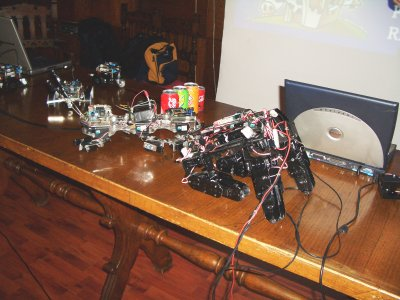

El sábado 5 de Mayo dimos la conferencia-demo “La Granja de Micro-Robots” en la Nebrija Lan Party, celebrada en el Colegio Mayor Universitario Antonio de Nebrija en Madrid.
Fue la primera charla en la que mostramos al final el movimiento de un skybot con el mando de la wii, al estilo “minority report” 😉
Obijuan